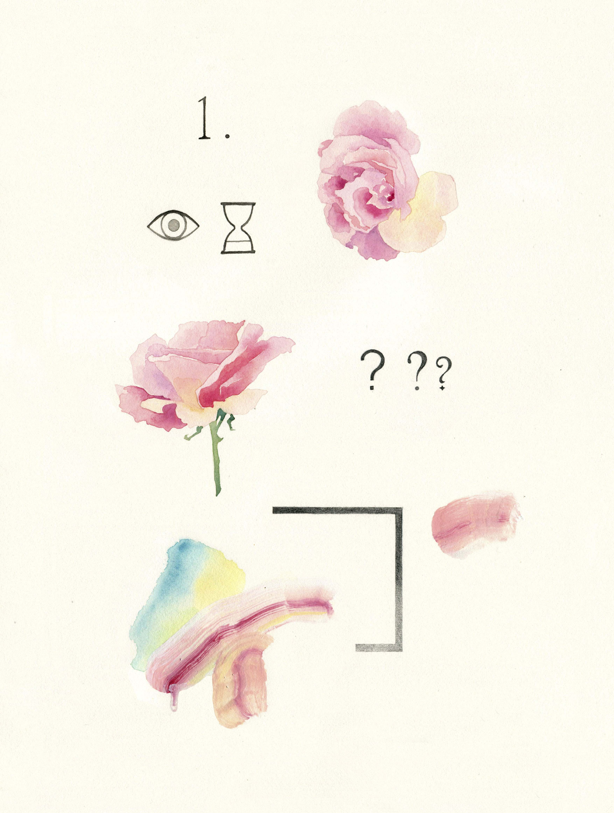
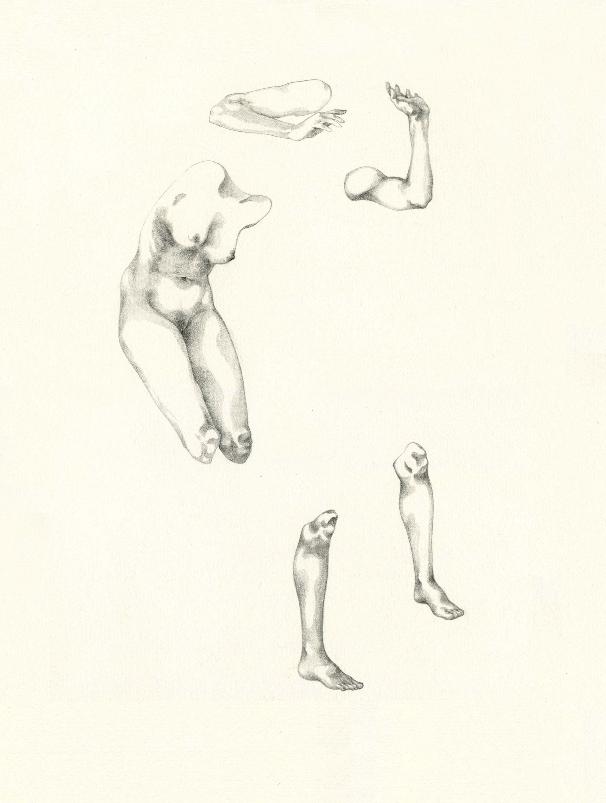

2016

Desde su nacimiento, nuestro cuerpo está lacerado por significantes que lo fragmentan. Formas vacías de contenido en una dialéctica constante con el significado, que desordenan la armonía natural del hombre. Desde niño, el Ser se vuelve “Sujeto” de condicionamientos externos y opiniones, juicios y prejuicios, mientras está construyendo su propia identidad. En medio de este desajuste, la pregunta “¿Quién soy Yo?”, no puede escuchar una respuesta orgánica.
Acuarela, guache y lápiz sobre papel.
 